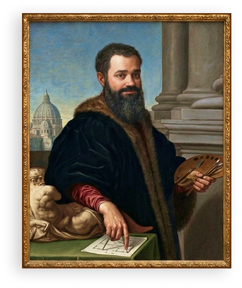

sobre
olá, universo
Nasci em 1987, em Belo Horizonte, e sou um artista plástico autodidata: aprendi sozinho, testando e repetindo até encontrar minha própria linguagem visual.
Foi em 2019, antes da pandemia, que essa linguagem ganhou forma: cubismo, hermetismo, quadrinhos e arte urbana se cruzam nos quadros que carregam a minha assinatura.
Em 2021, essa assinatura atravessou o Atlântico. Fui convidado para uma exposição coletiva em Helsinque, na Finlândia, no espaço Cable Factory. No Brasil, minhas obras já passaram pelo Centro Cultural dos Correios, no Rio de Janeiro, e pelo Espaço Cultural dos Correios, em Niterói.
Entre 2023 e 2024, meu trabalho retorna a Belo Horizonte para expor no Museu MM Gerdau, no Minas Tênis Clube II e nas galerias Cobo e S/A. “Beagá” não é só onde nasci: é onde minha arte continua sendo feita, revisitada e reconhecida, capítulo após capítulo.
Hoje meu trabalho é requisitado além das fronteiras: tenho colecionadores em Atlanta, Connecticut e Nova York, nos Estados Unidos, e peças presentes em Libourne, na França, e Puebla, no México.
A arte, pra mim, é questão de herança: cresci em uma família de artistas, colorindo ainda criança os desenhos do meu pai, Eduardo, e as obras do meu tio, Fernando.
Talvez seja por isso que acredito que nada, nessa vida, acontece por acaso: tudo tem um porquê, uma motivação, um princípio. Cada ação que faço no presente responde a uma pergunta que eu mesmo já havia mentalizado antes.
coleções particulares
- Belo Horizonte, Brasil;
- Nova Lima, Brasil;
- São Paulo, Brasil;
- Puebla, México;
- Atlanta, Estados Unidos;
- Connecticut, Estados Unidos;
- New York, Estados Unidos;
- Libourne, França.

clipping
Google Arts & Cultura:
Entrevista para o Agenda da Rede Minas:
Coletiva Cobo:
Minas Tênis Clube:
Bela Bienal (Internacional):
instituições internacionais
- Cable Factory Cultural Center (Helsinque, FI).
instituições nacionais
- Museu MM Gerdau (Belo Horizonte, BR);
- Minas Tênis Clube (Belo Horizonte, BR);
- Mercado Novo (Belo Horizonte, BR);
- Centro Cultural dos Correios (Rio de Janeiro, BR);
- Espaço Cultural dos Correios (Niterói, BR).